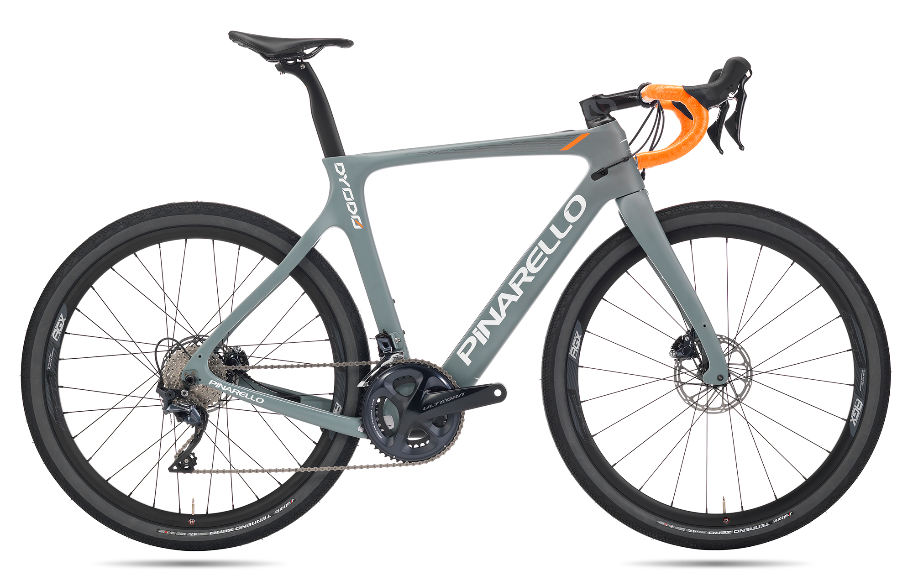
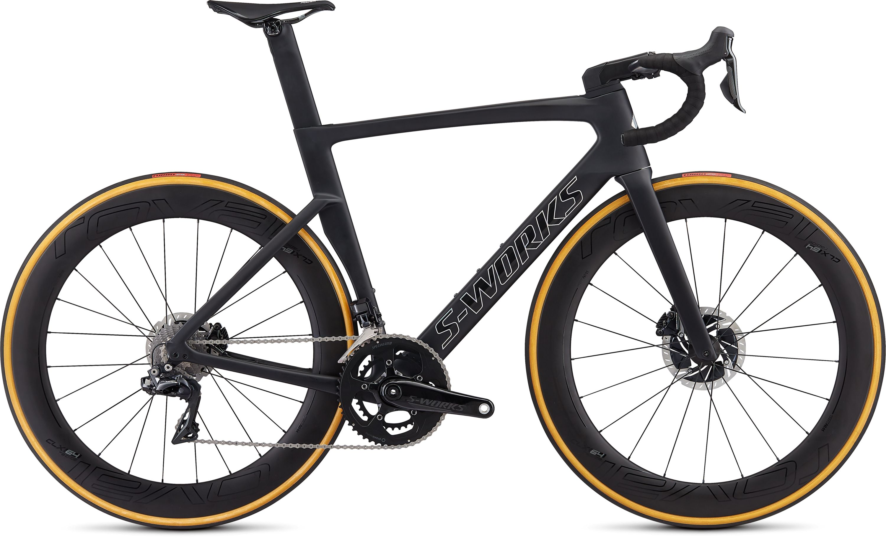

| Roadbike Road bikes are one of the most popular types of bike and are much faster in our urban jungles than mountain bikes. Because of the increased speed road bikes offer on paved surfaces, they are a popular choice with bicycle commuters and anyone who regularly cycles within towns and cities. As I’ve covered road bikes are designed to be used on paved roads, however, they’re also suitable for flat trails and some off-road paths. | |
|---|---|
|  |  |
Back To Home Page? | |